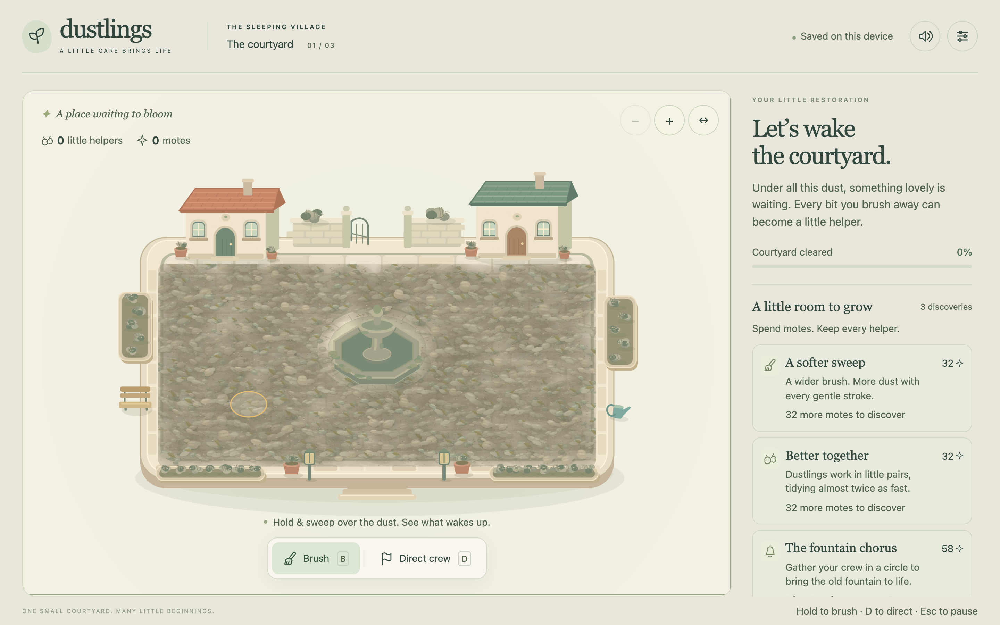
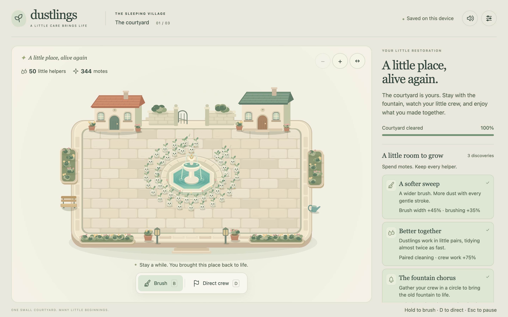
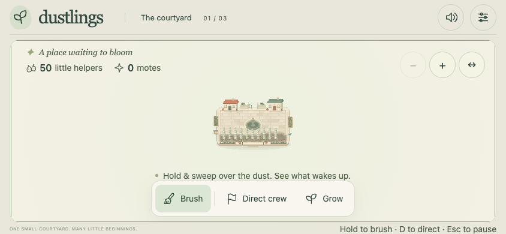
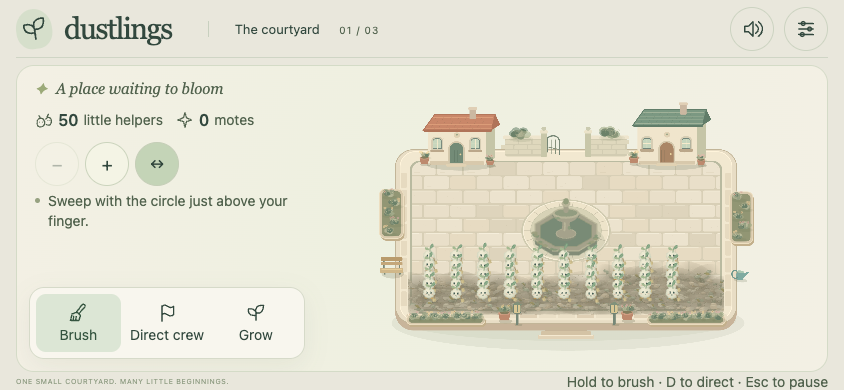
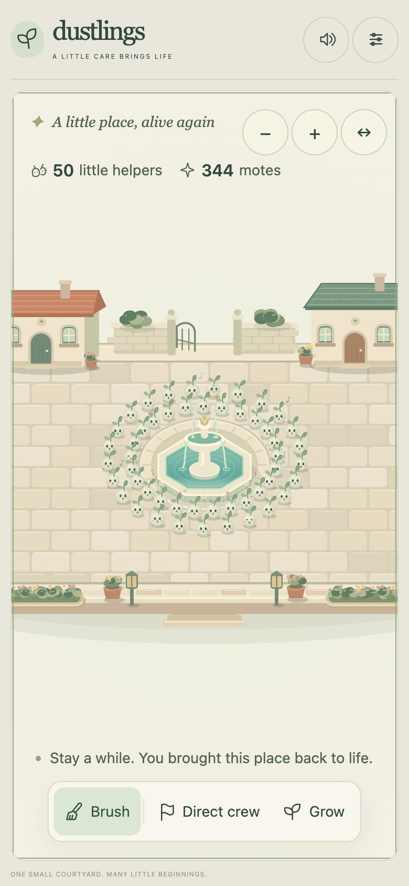
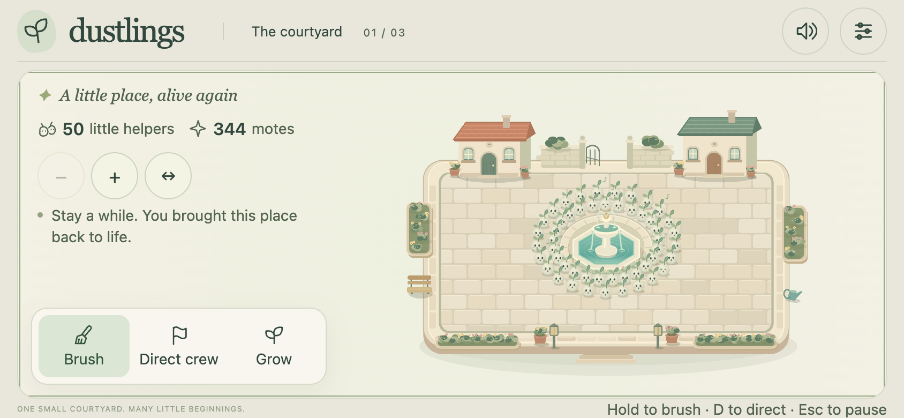

DUSTLINGS · COURTYARD 0.2.0A little care brings life.
Brush a forgotten miniature courtyard, turn dust into tiny helpers, choose three discoveries, and wake the wishing fountain. This candidate includes corrected saves, keyboard restoration controls, readable text, responsive framing, and browser input fixes.
Play the offline courtyard ↗Private playtest protocol
Awaiting human validation. Human sessions: 0. Player experience, presentation quality, and owner acceptance are three separate gates; none has passed. This is a courtyard prototype, not a finished game or a release-ready product. Canal and clocktower garden remain outside this milestone.
The restoration reveal

Current artifact at opening, 1440 × 900 viewport, DPR 2.
Same artifact and framing from a completed simulation save. This is a controlled fixture, not a human playthrough.Watch real game interactions
Normal-speed scripted opening with the full interface: brushing, helper formation, first discovery, and crew direction. Silent UI recording; no progress shortcuts during this segment.Opening canvas with its live game audio. The DOM interface is outside the canvas recording. First helper at 8.73 seconds; 4 helpers by 39.11 seconds in this scripted run.
Normal-speed fountain chorus and restoration, with live game audio. Begins from an explicitly automated cleaned courtyard; the bell uses the actual interface.
Focused corrections, before and after

Previous landscape framing: village approximately 125 × 78 CSS px. Synthetic 50-helper fixture.
Corrected landscape framing: approximately 373 × 236 CSS px, with controls beside the scene. Synthetic 50-helper fixture; source capture from the camera correction.Camera checks and pan recording · Text before/after · Rotation and gesture correction
What the technical evidence establishes
- Current artifact, 50 helpers for 60 seconds: mean 16.67 ms, p95 16.80 ms, p99 16.80 ms, worst 16.80 ms; 0 intervals over 33.4 ms and 0 at least 500 ms. Headless Chrome 152.0.7977.83, MacBook Pro M4 Pro / 48 GB, macOS 26.6.2, 1440 × 900, DPR 2, sound playing. The earlier 0.1 profile's isolated 216.6 ms interval remains unexplained.
- Exact offline artifact checks: launch, save/return, bounded layouts and primary controls at least 44 px, with no external network requests or JavaScript errors.
- Save and settings recovery, keyboard interaction, and WebKit compatibility have documented automated checks. Engine tests and simulated viewports do not establish physical device support.
- Audio startup measured a reduction in Start-gesture work by moving silent native setup into welcome idle. The original motif and generated sound buffers are preserved. Human listening, cue balance, fatigue and emotional payoff remain untested.
Device previews and remaining human questions

390 × 844 simulation, initial 1.7× framing. Pan and fit keep every dust patch reachable; real finger comfort is unknown.
844 × 390 simulation. Physical safe areas, creature recognition and long-session performance need device testing.Figma was unavailable. The playable onboarding, journal, upgrades, settings, pause, progress and recovery flows are the inspectable interface prototype. Original art direction and reference study identify specific qualities from Monument Valley, It Takes Two, Stardew Valley, Overcooked and Animal Crossing; no benchmark-level claim is supported.
Observe 12–20 unfamiliar intended players. Record who tested this exact artifact, their primary segment, coaching, upgrade success, continuation choice and reasons. Investigate confusion, fatigue, awkwardness, unpleasant visuals and disappointment. Separate incremental buyers, cleanup/cozy players, and friends/developers. Ask the owner separately about vision fit, quality, completeness and sell readiness. The current human ledger has no sessions or approval.
Artifact SHA-256: cb4b9d7bc6174a96bd203a22f9a8a5a766f3fa0eca10475e80c8e4d681f5feea
Source checkpoint: 4384d82d61210269332cb8568ef89c7399425b86; built 2026-09-10T06:17:56.300Z. Recordings and exact-build reports above identify this artifact. Automated timing is not player pacing. Windows, branded Safari, physical iPad/iPhone, native screen/audio review and human reception remain unverified.
Continuation checkpoint · Ordered quality gaps · Controls and launch instructions